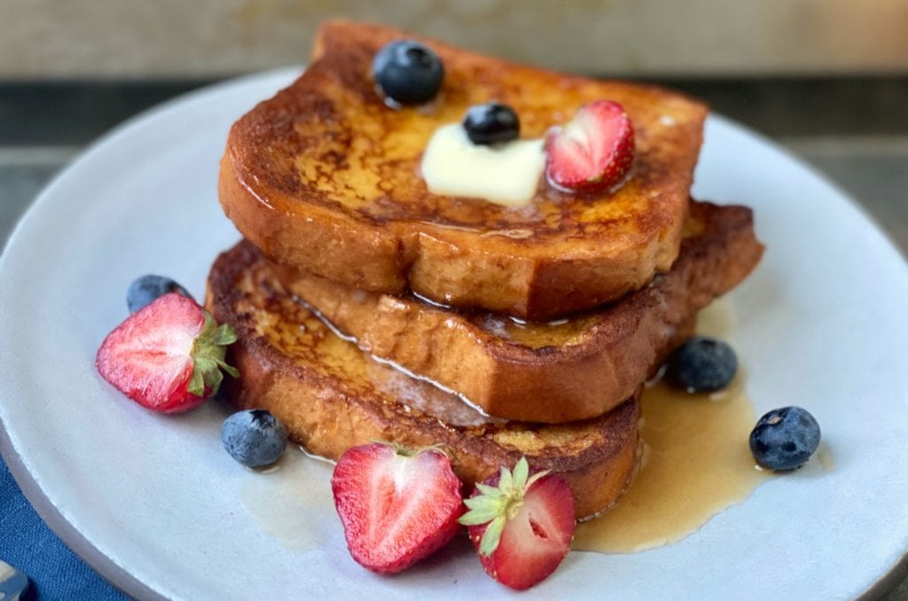

Photo by Lynne Calamia
Description
Soaked in a creamy custard sweetened with honey, this comforting and easy French toast is best served with a hefty drizzle of maple syrup. To make extra-crunchy French toast, dredge the battered bread in crushed cornflakes or Frosted Flakes before cooking. This recipe first appeared in Season 7 of Good Eats.
Ingredients
- 1 cup half and half
- 3 large eggs
- 2 tbsp honey, warmed in microwave for 20 sec
- 1/4 tsp kosher salt
- 8 (1/2-in) slices day old or stale country loaf, brioche, or challah bread
- 4 tbsp butter
- Crushed Frosted Flakes, for coating, optional
Steps
- In a medium-size mixing bowl, whisk together the half-and-half, eggs, honey, and salt. You may do this the night before, just be sure to refrigerate the mixture overnight. When ready to cook, pour custard mixture into a pie pan and set aside.
- Heat oven to 375ºF. Dip bread into custard mixture, allow to soak for 30 seconds on each side, and then remove to a wire rack set inside a half sheet pan, and allow to sit for 1 to 2 minutes. Meanwhile, line a second half sheet pan with a wire rack and set aside. If using Frosted Flakes, coat the soaked and rested bread before cooking.
- Over medium-low heat, melt 1 tablespoon of butter in a 10-inch saute pan. Place 2 slices of bread at a time into the pan and cook until golden brown, 1 to 2 minutes per side. Remove from pan and place on a rack-lined half sheet pan in oven for 5 minutes. Repeat with all 8 slices. Serve immediately with maple syrup, whipped cream, or fruit.